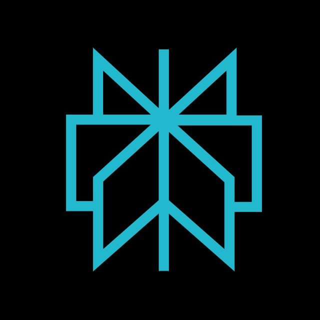

御社のAgent Readiness診断レポートに基づき、AIが御社をどう認識しているか、どこで機会を逃しているかを整理しました。
Score
診断スコアは、AIが御社を理解・比較・推薦・実行できる準備度を示す指標です。
SEOで見つかっても、AIが正確に理解・比較できなければスコアは伸びません。診断で検出された構造的な課題は次のとおりです。
企業・サービス・拠点がAIに一意に識別できず、事業内容の把握精度が下がっています。
Schema.org / JSON-LDが不足し、AIクローラーが情報を正確に読み取れていません。
AIが参照するQ&Aや比較に必要な差分情報が、公式サイト上で言語化されていません。
推薦の根拠となる引用元・メディア露出・口コミ導線が不足しています。
ChatGPT・Gemini・Claude・Perplexityが御社について、現時点でどう回答するか。これが実際のAI推薦の出発点です。

Perplexity見つかることと、選ばれることは別の問題です。現状のままでは、次の機会損失が続きます。
比較に入っても、推薦の根拠がなければ選ばれません。
競合との差分がAIに伝わらず、強みが言語化されていません。
AI検索・AIエージェント経由の新規接点に乗れない状態が続きます。
選ばれても予約・問い合わせ導線の接続性が弱く、機会が消えます。
Agent Readiness改善プログラムで構造化・Entity設計・AI検証を実施した場合の目標スコアと、AI推薦文の変化です。
診断で特定した課題を、優先度順に設計・実装・検証する伴走型プログラムです。
企業・サービス・拠点をAIが一意に識別できるよう、Entity情報を構造化して設計します。
AIが引用する権威ある情報源を整備。推薦の根拠となるメディア露出・口コミ導線を設計します。
AIが正確に理解できる形式でコンテンツを再設計。比較に必要な差分情報を言語化します。
AIが参照するQ&Aを整備。顧客の意思決定に直結する質問と回答を構造化します。
Schema.org / JSON-LDによる構造化データを実装。AIクローラーが読み取れる状態に整備します。
4大AIでの認識状況を定点観測し、再診断でスコアを追跡。改善サイクルを継続します。
契約・運用・レポートまで全て込み。余計なオプションや隠れコストは一切ありません。
※ 診断結果をもとに、優先施策から伴走します。
内容のご確認は、下記の無料相談からお申し込みください。
診断結果はゴールではありません。
30分の無料相談で、御社の優先改善項目と進め方をご説明します。
改善 → 検証 → 改善のサイクルで、
AIが理解し、比較し、推薦できる企業へ近づきます。